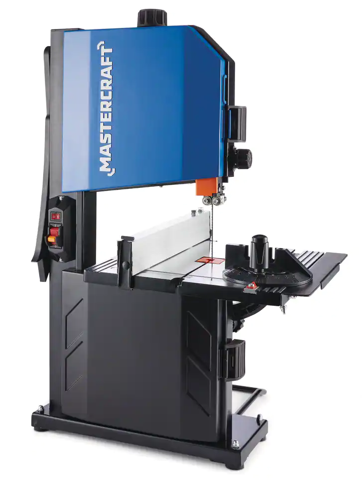

CO2 Dragster Process
When I first had my CO2 Dragster block, it was just a block, with the wrong dimensions. I used multiple machines such as the mitre saw, the band saw and the disc/belt & Spindle Sander to cut intricate shapes from my CO2 Dragster block, and to further smoothen out the surface of my CO2 Dragster.
1. Design + research
Before starting anything, I firstly sketched my dragster design on sketchup. This is the result:
This design really helped me to consider the following important factors: weight, aerodynamics, surface friction, and fluid friction. Notice that we are always able to change our designs if our first sketchup design doesn't work.
2. Cutting out the dimensions
After finishing my design and selecting my desired wood, I proceeded to use the mitre saw to cut out a block that is 12 inches long. What exactly is a mitre saw.
A mitre saw, also known as a chop saw, is a powerful and versatile tool used for making accurate crosscuts and miter cuts in wood, plastic, and other materials. Here is what a mitre saw looks like:

In this picture, there is a labeled ruler just above the flat surface where we place our wood. This is where we measure exactly 12 inches.
In order to activate a mitre saw, we hold the handle at the very top of the picture, press that button behind the handle and pull down until we can't pull down anymore. While cutting the wood, it is important to push the wood against the ruler, with your hands away from the blade, as it can cause injuries or a bad cut.
After the cut, we stop the mitre saw by letting go of the button. But before bringing the saw saw back up, we must make sure the blade stops spinning, otherwise it could send debris flying.
3. Drilling the hole
In this step, we will be drilling our hole into our block of wood. In order to do this, we will first make an "X" in the car, and the drill press to drill the hole. When making an "X" on the desired side of drilling the hole, we must make sure we are cutting away from our hand, as we don't want to cut ourselves. This is a mistake that many people make, and this is the step where many people end up cutting themselves, so it is always important to cut away from your hand.
A drill press, also known as a drilling machine or pedestal drill, is a stationary machine tool designed for precision drilling of holes in various materials. It consists of a base, a column, a spindle, and a worktable. The spindle, which holds the drill bit, can be adjusted vertically, allowing for precise control over the depth of the hole. Drill presses are commonly used in woodworking, metalworking, and other applications where accuracy and controlled drilling are essential. They offer stability, consistency, and the ability to handle a variety of drill sizes and materials. This is what a drill press looks like:
We shall first start the drill press by pressing the green start button that will be found near the drill press. In order to know if our hole is accurately drilled, we grab the feed wheel and pull it down to see if it is where it's supposed to be. If it's not accurately placed, we are always able to adjust the wood placement. It is also a good idea to use some sort of support, so the wood doesn't accidentally fall during the drilling. Other than the catdridge hole, we will also drill our two axle holes using this machine, with the same logic.
4. Cutting out the design and gluing it onto the wood
This step isn't very complex, although a few important things to mention is to always cut outside of the line. Whenever you print out something from sketchup, there is always a line outside of the design, and that line has a thickiness. This line is for sanding down the design. If we were to cut out the lines, we wouldn't have space to sand down the shape of our dragster, and it would be slightly shorter than expected.
Another thing we should keep in mind is to align our hole in the design, to the hole in our block. If it's not, we will have problems with cutting out our design, and placing it onto the CO2 catridge.
5. Cutting out the shape
We will use the band saw to perform this action. A band saw is a power tool used for cutting a variety of materials such as wood, metal, plastic, and more. It consists of a continuous band of toothed metal, known as the blade, that rotates between two or more wheels. The workpiece is fed into the band saw, and as the blade moves in a continuous loop, it creates precise and often curved cuts. Band saws are versatile tools, widely used in woodworking, metalworking, and other industries due to their ability to make intricate cuts and handle various materials with efficiency. Here is what a band saw looks like:

We shall first start the band saw by pressing the green start button that will be found near the band saw. When we start cutting out the shape of our dragster, it is important to cut outside of the lines, as we will sand down to the line later. To cut out something on a band saw, we should carefully feed the workpiece into the rotating blade, maintaining a steady and controlled pace. Maneuver the material along the intended cutting line, following the desired pattern or shape. After completing the cut, turn off the band saw and wait for the blade to come to a complete stop before removing the cut piece.
Another important thing to notice is that when a piece of wood is about to be seperated from your block, we should always slow down as much as we can at the end. If we don't, our hands will potentially continue to slide and it might slide into the blade. While cutting the block in the band saw, it is important to remember to be slow and steady, and to maneuver our material along the inteded cutting line.
6. Sanding
Depending on the surface of our shape, we will either use the disc/belt sander, or the spindle sander. A disc/belt and spindle sander is a versatile woodworking machine that combines two functions in one unit. It typically features a flat sanding disc, a belt sander, and a spindle for detailed sanding tasks. The flat sanding disc provides a large, flat surface for quick material removal and general sanding, while the belt sander offers a continuous loop of sandpaper for more aggressive stock removal and shaping. The spindle, located above the table, allows for precision sanding of curved or intricate details. This type of sander is widely used for smoothing, shaping, and finishing wood and other materials in woodworking projects. It provides woodworkers with the flexibility to choose the most suitable sanding method for different tasks within a single machine. This is what a disc/belt & spindle sander looks like:
In order to operate a disc/belt & spindle sander, we must first turn on the start button which can be found near the machines. If the shape we want is simply a flat surface, the disc/belt sander is the way to go. If it's more intricate and has more of a curve, we should use the spindle sander. If it's unreachable, then we are better off with the sand paper and sand it down manually. Although it may seem simple to use, there are still many safety mistakes many people make.
You may only sand on one side in the disc sander, which is the left side. Sanding on the upward side of the disc could cause the work piece to fly up. Belt sanders are directional, but it is important to go against the direction the belt sander is moving, otherwise it could cause your work piece to fly out of your hands to somewhere where we don't want it to go. The spindle sander only goes in a counterclockwise direction, which means we must go clockwise to go against it. If not, it could cause our workpiece flying out of our hands, to somwhere where we again, don't want it to go.
7. Putting in the axles + wheels
This step is where we put on our axles and wheels, which makes the dragster roll on the track. This step requires a bit of strength in order to put the wheels on the axles, and lot's of precision.
A few steps ago, we used the drill press to drill our axle holes. Now, we will be inserting a plastic straw and the axles into our axle holes. This step will require very precise measurements in order to complete. We will need to make sure that the length of our straw is as short as possible but at the same time, just slightly longer than the width of our dragster at axle height. This is because we must keep our axles stable but at the same time, we don't want our wheels to rub against the wood, which creates axle rotational problems.
Next, we use the hacksaw to cut our axles in a respectable length. The length of these axles should be slightly longer than our straw. Here is what a hacksaw looks like:

Cutting an axle requires some patience and technique. Firstly, we must make sure that while cutting our axles, the axle doesn't move or roll away. There is usually some sort of support that prevents the axles from rolling away.
Next, we will discuss about the technique of cutting the axles. We will put pressure on the axle using the hacksaw and saw quickly, until we make a dent in the axle. After that, we would saw slowly. One important thing to know is to not apply too much pressure at the very end of the axle, as we could slide our hand and accidentally cut ourselves. Therefore, whenever we reach the end of an axle, we must be slow and steady to avoid any accidents.
When putting on our wheels, we must first make sure that the surface around the wheels is smooth. Removing any rough edges will remove surface friction problems on the wheels. In order to do this, we will use the exacto knife. The logic of removing the rough edges has the same logic as making an "X" with the knife. We want to cut away from our hands, otherwise we will cut ourselves.
8. Painting
This is probably the least mandatory step, but isn't it always great to make you dragster as cool as possible? The only problem here is that in order to paint the edges of your dragster, you must remove your axles, paint, and wait until it's dry. Then, we may proceed to put back the axles. The final results may look something like this:


9. Screw eyes
The purpose of the screw eyes is for the fishing lines when we race our dragsters. The purpose of the fishing lines is to prevent the vehicle from losing control during launch. Without the proper placement of screw eyes, we will be unable to put on the fishing hooks properly, affecting our racing time. This is how the fishing line will go:

From this image, we can see that the hole in the screw eyes must be placed perpendicular to the fishing hook, so that the fishing hook could actually go through the screw eyes. Putting on the screw eyes is not entirely intricate, but we must first know that the minimum distance between the screw eyes is 6 inches, and that we cannot put the screw eyes through out axles, as that will prevent it from rotating. Here is how we will put on the screw eyes:
First, we must plot where we would put our screw eyes. After, we will use an awl (which is similar to a screwdriver) to screw a hole, which is where we will put our screw eyes. After, we will put the screw eyes in until it is tight and sealed.
Summary:
To build a CO2 dragster, we must first start by designing the dragster, considering factors like weight, aerodynamics, and friction, using software like SketchUp. Then, we cut a block of wood to the desired length with a mitre saw and drill precise holes for axles and a CO2 cartridge using a drill press. By utilizing a band saw to cut out the dragster's shape, remember to cut outside the lines for later sanding. Using a disc/belt sander or spindle sander, we smooth the surface with sanders. We then proceed to install axles and wheels with precision, ensuring a smooth and stable ride. Safety precautions, accurate measurements, and attention to detail are crucial throughout the construction process.